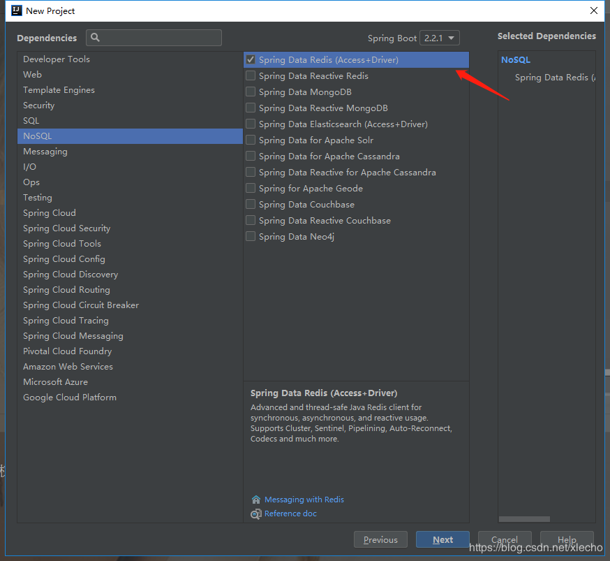
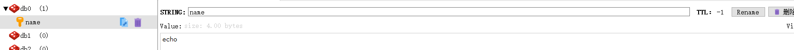

echo编辑整理，欢迎转载，转载请声明文章来源。欢迎添加echo微信(微信号：t2421499075)交流学习。 百战不败，依不自称常胜，百败不颓，依能奋力前行。——这才是真正的堪称强大！！！
该文章是对应前面Redis的使用，基本数据类型在SpringBoot项目的实现和使用。网上有很多的文章来描述了Redis的使用和整合，但是这里重新编写这一片文章主要是为了记录自己的学习代码，仅供交流学习SpringBoot整合Redis，熟悉整合和基本操作的可以直接跳过。
在创建该工程的时候，pom依赖这一块的选项我们只需要选择Spring Data Redis和junit即可，这里仅实现连接Redis，不连接数据库，不写前端接口，所有的用例，直接使用Junit来测试。我们看到界面上有两个Redis的依赖，我们选择第一个即可，第二个是响应式的redis，它内部包含了我们的第一个依赖，但是会涉及其他的功能，这里不讲解。

redis的配置连接其实关键在于配置文件，搞定配置文件，基本就已经完成了redis的整合，我这里的配置如下：
# Redis数据库索引（默认为0,它总共有16个数据库，我们使用第一个就是0）
spring.redis.database=0
# Redis服务器地址
spring.redis.host=192.168.222.135
# Redis服务器连接端口
spring.redis.port=6379
# Redis服务器连接密码（默认为空）
spring.redis.password=48835a9c-7a5a-4ec8-af6a-80af3e87b194
# 连接池最大连接数（使用负值表示没有限制）
spring.redis.pool.max-active=200
# 连接池最大阻塞等待时间（使用负值表示没有限制）
spring.redis.pool.max-wait=-1
# 连接池中的最大空闲连接
spring.redis.pool.max-idle=10
# 连接池中的最小空闲连接
spring.redis.pool.min-idle=1
# 连接超时时间（毫秒）
spring.redis.timeout=3000@RunWith(SpringRunner.class)
@SpringBootTest
public class RedisConnectionTest {
@Autowired
private RedisTemplate<String,String> redisTemplate;
@Test
public void set(){
redisTemplate.opsForValue().set("name","echo");
System.out.println(redisTemplate.opsForValue().get("name"));
}
}图片里面是使用的一个redis的windows连接端，名字叫做：Redis Desktop Manager，这里我们可以看到我们刚刚是否成功存入了值。

到这里，我们SpringBoot整合Redis就已经成功了，接下来我们一起来使用一下Redis的基本类型。
做一个有底线的博客主